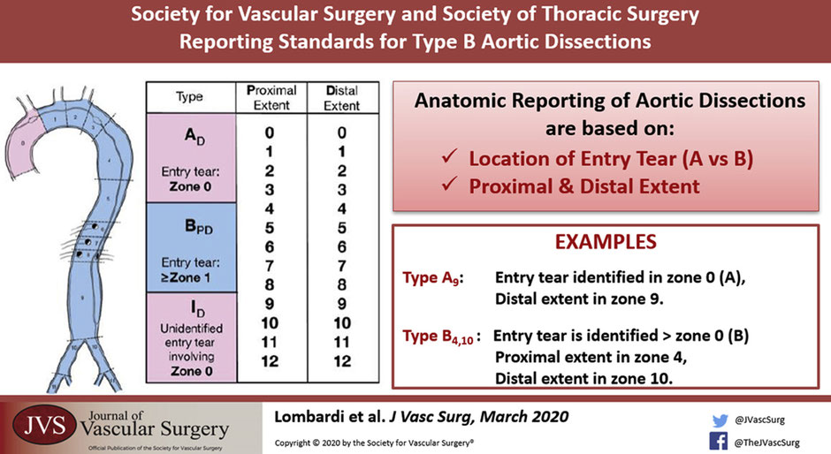
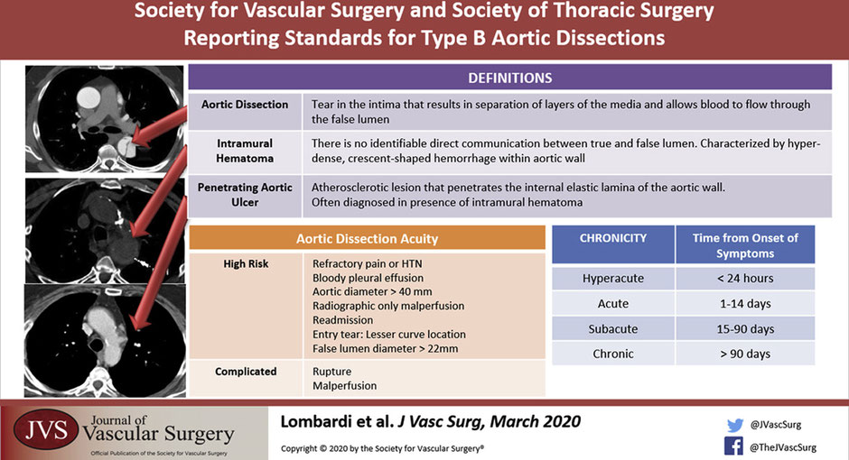

6 Aortic Dissection
Authors: Matt Spreadbury, Adham Elmously, Einar Brevik, and Joseph Lombardi
6.1 Demographics
What is an aortic dissection?
It’s when a tear occurs in the intima that results in separation of layers of the intima and media and allows blood to flow through the false lumen.
How common are they and how serious are they?
Acute dissections occur around 3/100000 - 2-3x more common than ruptured aortic aneurysm. For Type A dissections, early mortality 1-2% per hour - if untreated, 20% die within 6 hours, 50% within 24 hours, 70% first week.
Main cause of death in type A is aortic rupture into the pericardium, acute aortic regurgitation, and coronary ostia compromise. While patients with descending thoracic aortic dissections are more likely to die from end organ compromise due to obstruction of visceral or extremity vessels in the acute phase of the disease.
The time frame is also important.
Hyperacute <24 hours
Acute < 2 weeks
Subacute 2 weeks – 3 months -> TEVAR
Chronic >3 months -> Chronic aneurysmal degeneration/ partial false lumen thrombosis (highest risk) = operative treatment
6.1.1 Classification and Terminology
When we think about aortic dissections there are a few classifications, how can we break it down?
Historically, there are the Stanford and Debakey Criteria.
Anatomical Stanford
Type A - involves the ascending aorta, 2/3 (most common)
Type B - arises from distal to L subclavian, 1/3
Debakey
A
1 - ascending + descending
2 - ascending only
B - distal or at the LSCA.
3a - Descending aorta above diaphragm
3b - Descending aorta above and below diaphragm
How about the new system proposed by Dr Lombardi, the SVS-STS classification system?
The new system published in 2020 keeps A and B and adds a number system which divides the aorta into zones from 0 proximally to 12 distally in the mid SFA. (Lombardi, Hughes, et al. 2020)

Type A is now JUST the ascending aorta to the innominate, also called Zone 0.
Type B is now an entry tear in Zone 1 or greater and distally to whichever zone the dissection lands in.
6.1.1.1 Penetrating Aortic Ulcer and Intramural Hematoma
This anatomical classification is based on reading the CT angio. What else could we see on a CT angio that we have to know about?
So aside from the aortic dissection its self, you could see a bleb of contrast sticking out. That could be an penetrating aortic ulcer. That is an atherosclerotic plaque that penetrates the internal elastic lamina of the aortic wall.(Ciccone et al. 2016)
Another key finding can be an intramural hematoma which is a hyper-dense crescent shaped hemorrhage within the aortic wall. There is no identifiable direct communication between the true and false lumen. IMH are classified in the same way but with the abbreviation IMH p-d zones.

Whats the significance of these two in combination?
There is a higher chance of aortic rupture if a penetrating aortic ulcer is seen with intramural hematoma.
When a patient presents with an aortic dissection how can we classify them clinically?
Uncomplicated
Stable hemodynamics
No evidence of malperfusion
Pain controlled
Complicated
End organ ischemia / malperfusion
Rupture or impending rupture
High risk for early complication or continued growth(Bogerijen et al. 2014; Reutersberg et al. 2018)
Uncontrollable pain / hypertension
Bloody pleural effusion
Aortic diameter >40mm / False lumen diameter > 22mm
Readmission
Radiographic only malperfusion
Entry tear on the lesser curve
Number vessels originating from false lumen and length of dissection.(Brunkwall et al. 2014; Kamman et al. 2017; Nienaber et al. 2009)
What is the danger of a false lumen? How does it lead to symptoms and malperfusion? Likewise which arteries commonly branch off the true lumen?
The false lumen can lead to end organ ischemia as the intimal flap can cover the ostia of branching vessels. This can be a static or a dynamic obstruction.
Likewise it also leads to weakening in the wall of the aorta which can become a threatened rupture or rupture if the diameter of the false lumen is larger than 22mm.
The celiac trunk, SMA, right renal typically come of the true lumen. Left renal comes off the false.
Also the dissection most commonly goes down into the left common iliac rather than the right. You might be able to detect down stream effects of this on clinical exam with reduced left sided groin pulse.
The presence of multiple false lumens is associated with increased risk of aortic dissection related death.(Sueyoshi et al. 2013)
What kind of patients get aortic dissections?
Hypertension (older patients) vs cocaine or Meth (younger patients)
Marfans, Loeys-Dietz, Vascular Ehlers Danlos (Type 4), Turners, arteritis, Bicuspid aortic valve.
We also have a traumatic cause of aortic dissections. That being called blunt thoracic aortic injury:
Grade 1: intima tear
Grade 2: IMH
Grade 3: Pseudo aneurysm
Grade 4: Aortic rupture.
For more on the management of blunt aortic trauma, see Chapter 9
6.1.2 Presentation
How do these patients present?
Signs and symptoms – Chest pain 90% tearing pain radiating between the shoulder blades.
Chest pain extending to the abdomen abdomen? Think mesenteric ischemia or aortic tear
Type A - Stroke 5-10%, Syncope 15%, tamponade, carotid dissection, paralysis.
Others: MI, Hypovolemic shock, leg ischemia
6.2 Evaluation
What is the workup?
Physical Exam –Asymmetric pulses / blood pressure differences / Diastolic murmur,
Investigations - CXR, EKG, D-dimer + Troponin, CTA, ECHO for type A.
The big distinction is to find out if this is a type A or type B because the treatment strategy is completely different.
Type A need an emergent operation
Type B starts with medical management, follow up CT angiogram +/- Trans esophageal echo in the OR. Reevaluate at 24 hours.
6.3 Management
What are the details of Type A treatment?
Operative treatment with a 30% operative mortality. Let cardiothoracic take the lead on this one. However vascular surgeons should be involved in the management of type A as after the repair, a type A can become a functional type B.
Type B is in the realm of vascular surgery. What is the first management step after we have diagnosed a type B dissection?
Invasive impulse therapy aimed to reduce aortic wall stress.(Hughes, Andersen, and McCann 2013; Nienaber and Clough 2015) That means reducing the force of transmitted impulse down the aorta with blood pressure goals of 100-120mmHg and Hr < 60bpm.
How would you achieve that?
Start with a beta-blocker (esmolol or labetalol) first then a vasodilator (nitroprusside). This is to stop the sympathetic surge after vasodilation that could increase pressure and thus tearing forces inside the aorta worsening the dissection.
Initial CT, 72 hours, 3 months x 4, q6 months x2, q12 month. (Descending thoracic aorta that dilates first.)
Why isn’t open surgery indicated for type B dissections?
Open surgery is not recommended due to the high mortality 30% if < 48 hours. 18% if > 49 hours.(Trimarchi et al. 2006)
In the acute setting mortality can be up to 50% with a 20% paraplegia risk. Its been described as sowing tissue paper.
What is the management plan for a complicated Type B aortic dissection?
Start with invasive medical management and plan for TEVAR. The goal with TEVAR being to direct the blood flow into the true lumen and seal the entry tear. If there was a dynamic obstruction (flap occludes branching vessels.) Then TEVAR would reestablish the true lumen hence removing the dynamic obstruction. Endovascular fenestration can also equalize the pressure in the true and false lumen. (Lombardi, Gleason, et al. 2020)
For a static occlusion there could be a thrombus or stenosis in the branched vessel so a stent might be indicated.
What are the major risks of TEVAR in the management of Type B aortic dissections?
Retrograde type A (reported 2% in literature however it can be around 20% in some experiences). Carries a high mortality (ranging from 7-50%). Factors associated with retrograde dissection include:
Over-sized endograft - every 1% over 9% results in an increase in retrograde dissection of 14%.(Canaud et al. 2014)
Proximal landing zone more than 40mm (2% -> 18%)
Periprocedural hypertension
Underlying aortopathy.(Tjaden et al. 2018)
Paraplegia (reported around 5%)
Stent induced new entry.
Take a Listen
Check out Dr Arko’s conversation on the BackTable podcast to learn more about the complications of TEVAR management in dissections.
Is there a role for TEVAR in uncomplicated type B dissections?
The INSTEAD and INSTEAD XL trials looked at uncomplicated Type B dissections. There was NO statistical difference at 2 years comparing OMT vs TEVAR but at 5 years there was good aortic remodeling and better long term survival in patients treated in the sub-acute stage.
Timing for TEVAR is a difficult choice. In chronic dissections the septum thickens leading to a potentially difficult TEVAR. Anecdotally, TEVAR is best at 2 weeks to 3 months.
It should be noted, that both the thoracic and abdominal aorta often continue to dilate even after repair so follow up surveillance is paramount.(Famularo, Meyermann, and Lombardi 2017)
If repair must extend into Zone 2, then pre-TEVAR carotid subclavian bypass should seriously be considered in elective/urgent inpatient setting to reduce the risk of periprocedural stroke (1.9% vs 14.3%).(Bradshaw et al. 2017; Teixeira et al. 2017) Revascularization of the L subclavian with a L subclavian bypass is particularly important with a LIMA CAMB or a dominant L vertebral and a transposition is not appropriate.(Morasch 2009; Matsumura et al. 2009)